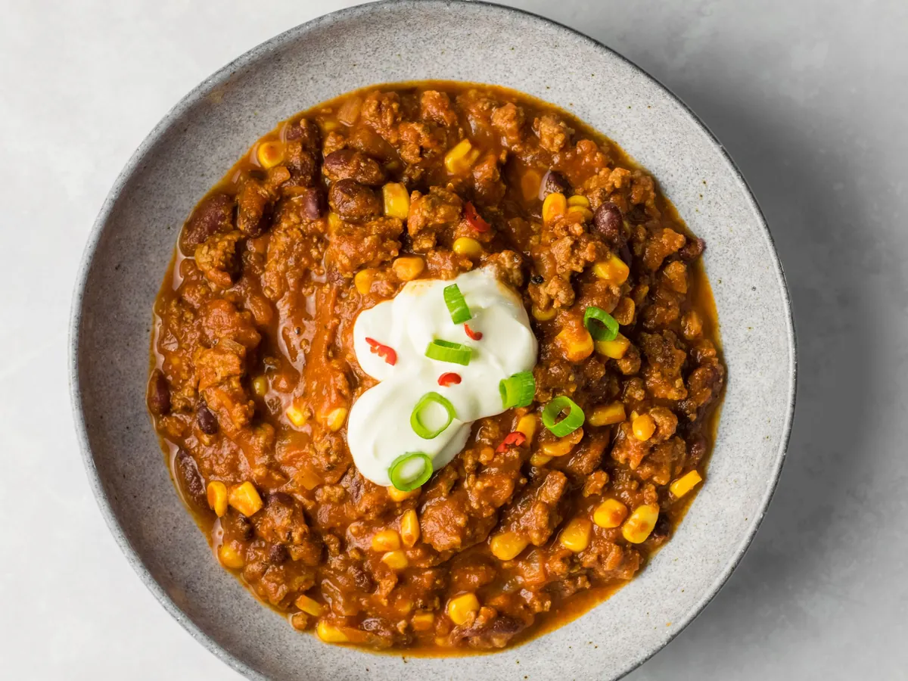
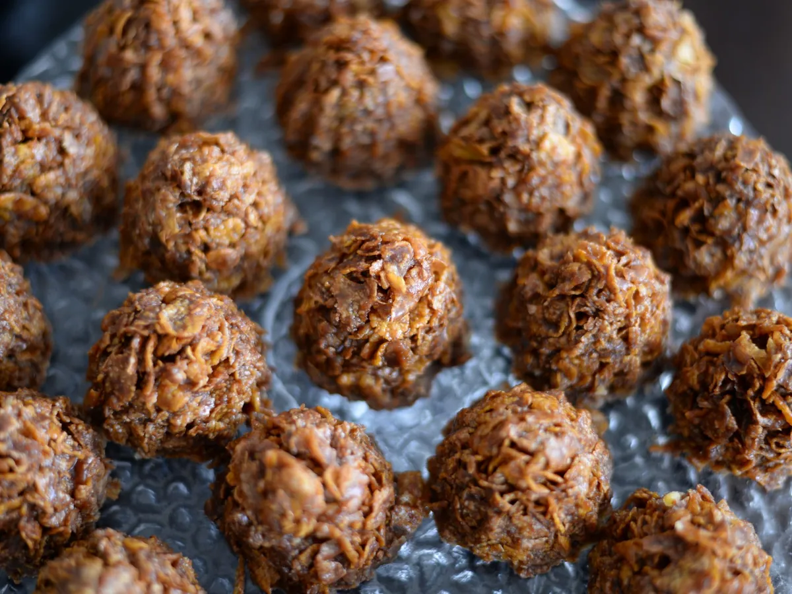
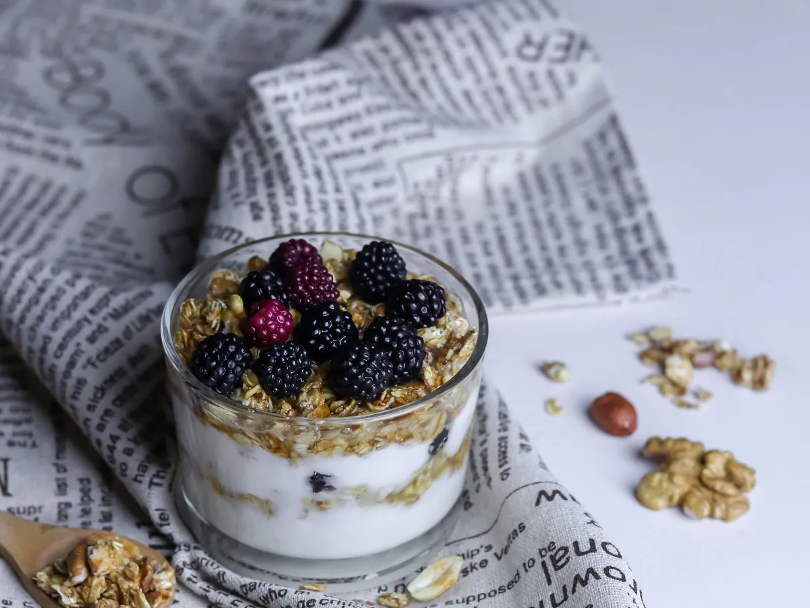
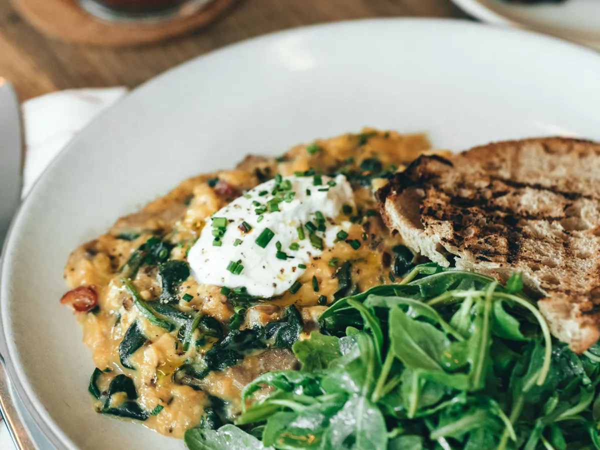
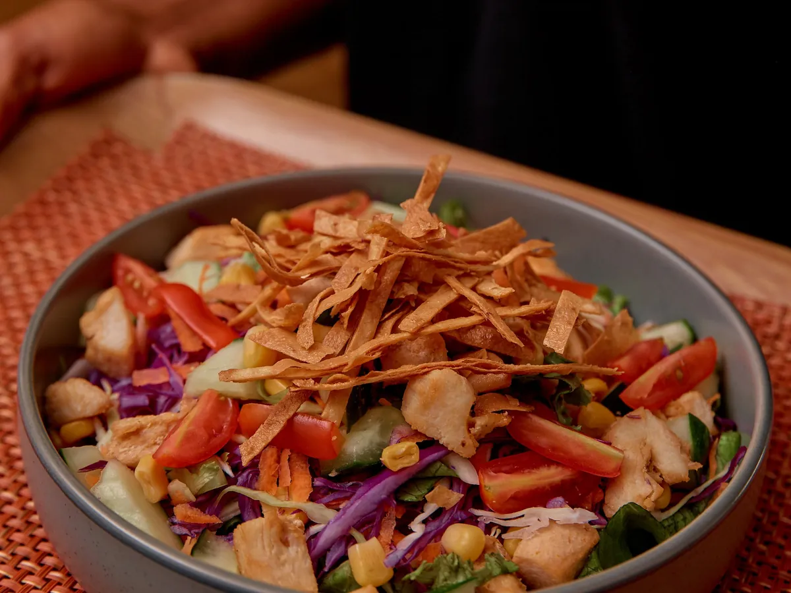
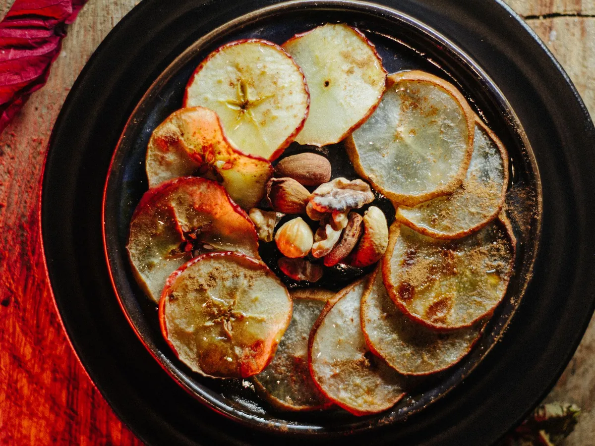

Thank you
Photo credits
Our main recipe and guide photos come from talented photographers on Pexels, shared under the free Pexels License. Step-by-step photos and pins are made by us.











